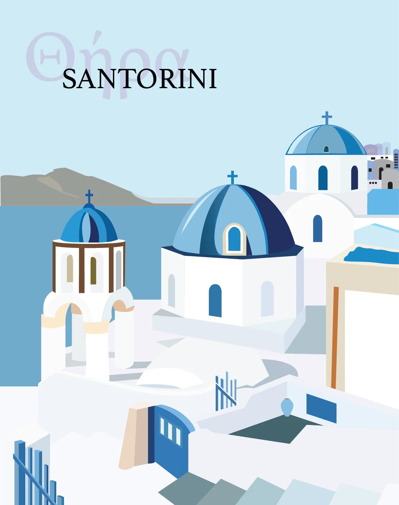
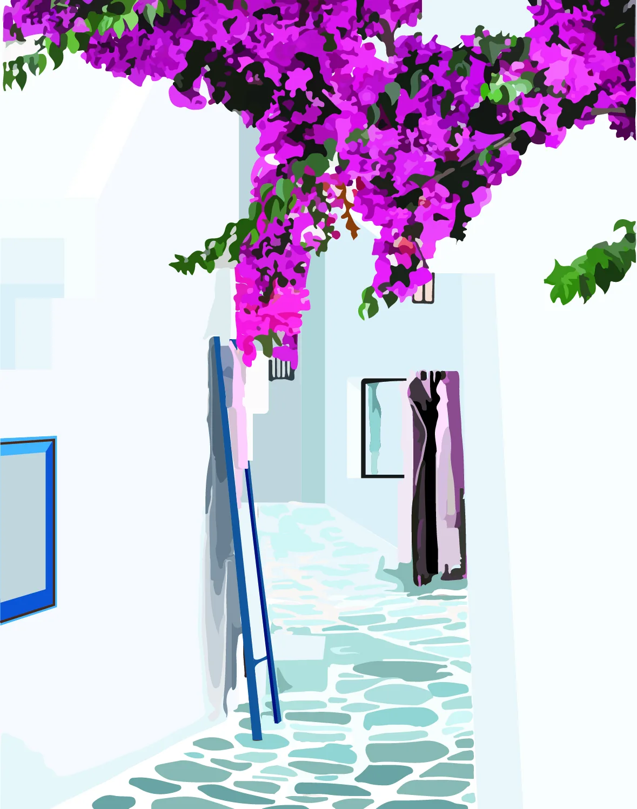
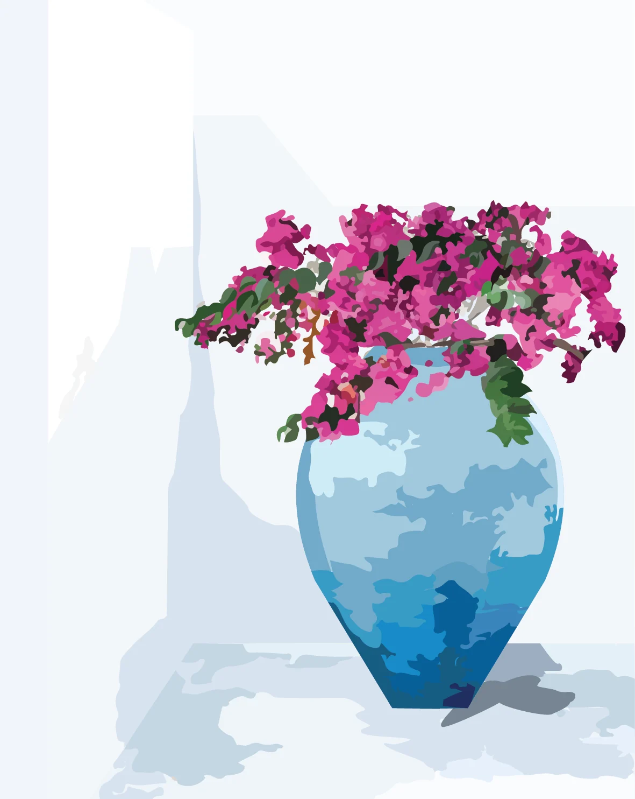
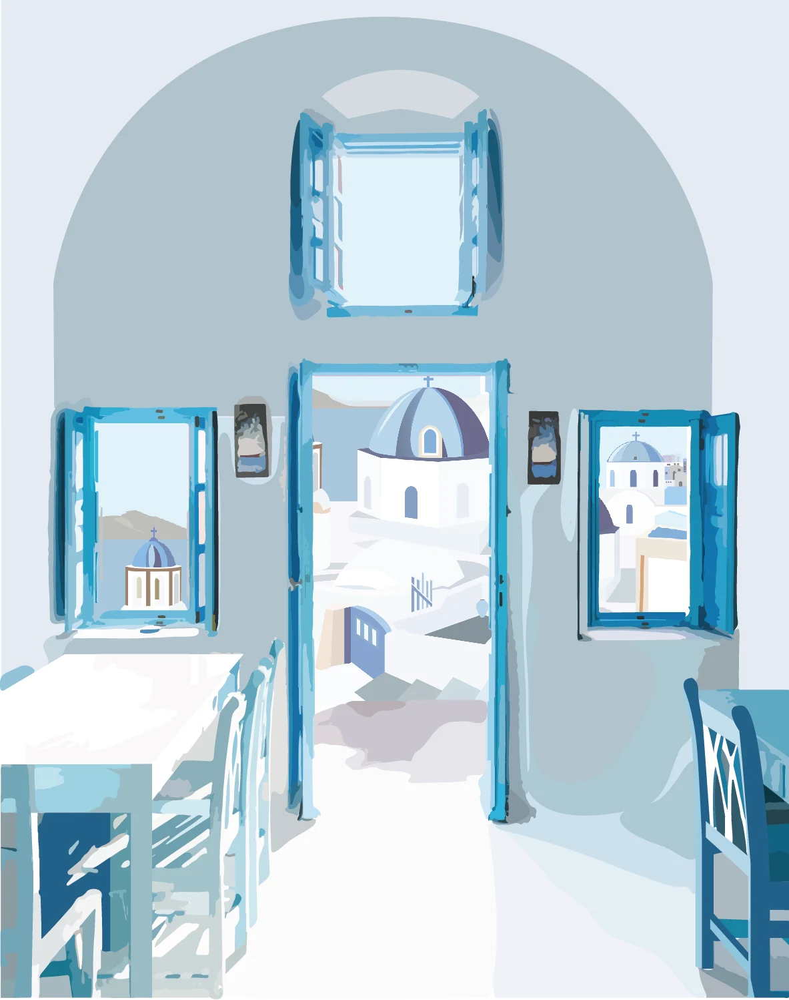
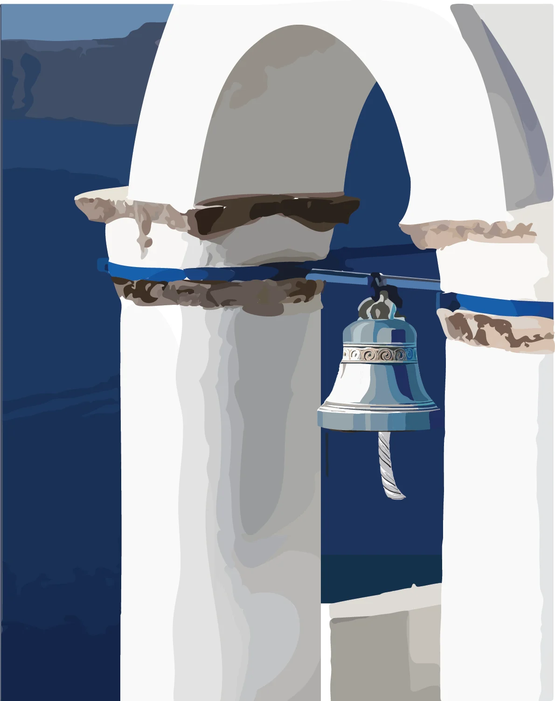
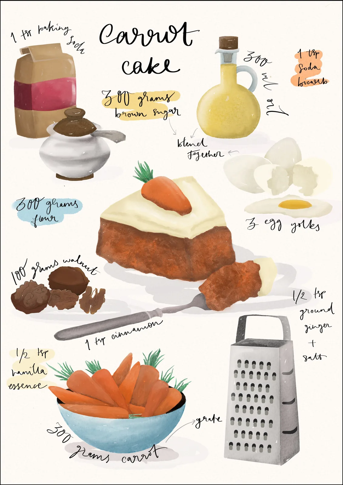
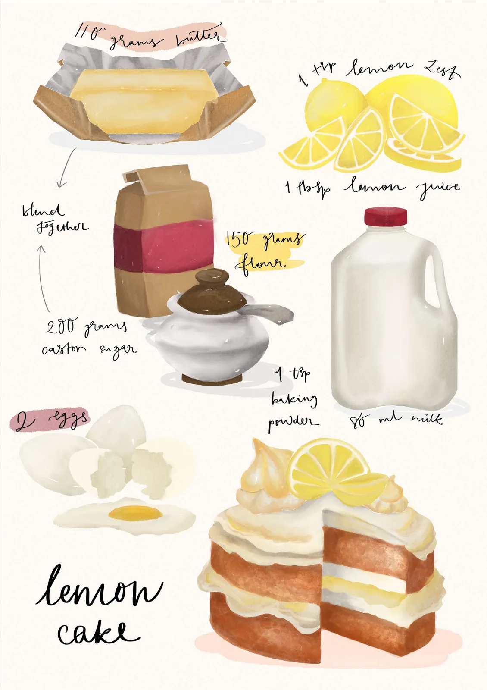

Illustration
Two series — five postcards that walk you into Santorini, and two recipe cards for the cakes I kept coming back to.

Five digital postcards, each capturing a different aspect of the place and pulling the viewer closer with every piece. The first introduces it by name; after that the text steps back and lets the imagery do the work. The palette stays in one world throughout — powder blue skies, white plaster, cobalt shutters, the occasional burst of magenta bougainvillea — while the scale shifts from wide landscape views down to a church bell and a vase of flowers. The idea was to make someone feel like they had been there, not just seen a photo of it.




During lockdown I started baking and turned it into a small business, Truffle and Hustle. Carrot cake and lemon cake were the two recipes I kept returning to, and for a long time my references were a photo on my phone or measurements scrawled on paper. I illustrated them instead — hand-lettered ingredients built around the finished dish — so they could go up in the kitchen and actually be used.


Credits — Illustration and lettering: Tanaya Agarwal.